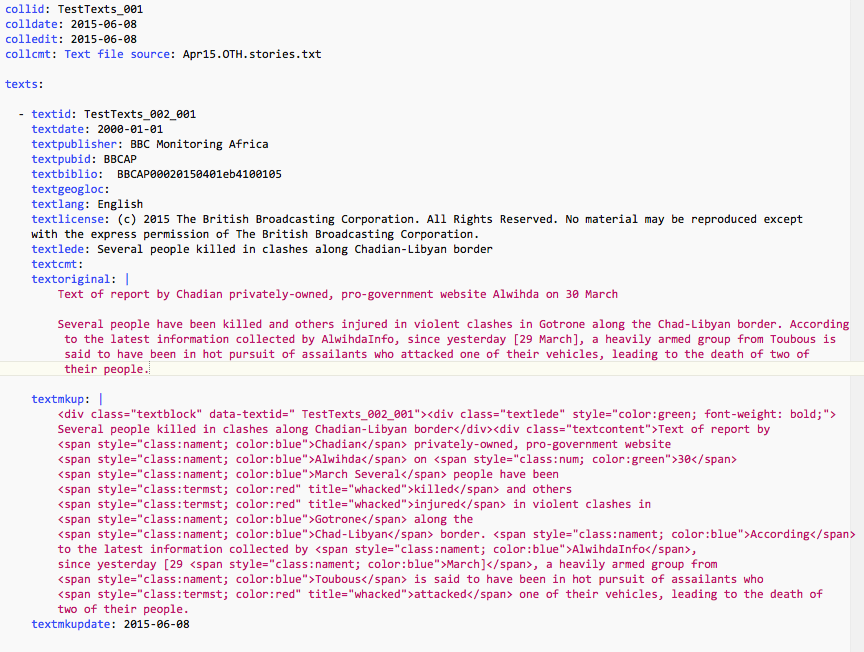

Appendix 2: Input Format¶
Fields marked with ** are required. Text fields are limited to 100 characters except for:
textoriginal,textmkupandcasevalueshave no length limitation- the three comment fields
collcmt,textcmtandcasecmtcan be up to 500 characters - coder ID, which is limited to 32 characters.
Collection fields¶
- collid
- Collection ID, which needs to be unique within the workspace. If this is not provided in the file, collfilename is assigned by the program
- collfilename
- directory and name of the YAML file (without the suffix) where the file was read from; this is assigned by the program
- colldate
- collection date YYYY-MM-DD
- **colledit
- datetime of editing of this collection [provided by system]
- collcmt
- collection comments
- texts
- one or more related texts
- cases
- zero or more coded records
Text fields¶
- **textid
- unique text ID for CIVET. This needs to be unique within the
workspace, and given how collections might get mixed across
workspace folders, ideally should be unique for the entire project.
If a value for the
textfield is not provided it will be assigned by the program. - **textdate
- text date YYYY-MM-DD
- textdelete:
- Boolean: text has been marked for deletion.
- textpublisher
- publisher [any string]
- textpubid
- publisher ID [any string]
- textbiblio
- bibliographic citation
- textgeogloc
- geographical locations
- textauthorr
- author [any string]
- textlang
- language
- textlicense
- copyright notification or other license information
- **textlede
- lede/headline/abstract—this is a short summary of the article which will be highlighted and also will appear in the sorting routine.
- textcmt
- comment
- **textoriginal
- original text of the story; this will not be modified by the system
- textmkup
- marked up text: this is the annotated version of the story with any mark-up that has been added either automatically on manually
- textmkupdate
- datetime time of editing of this block [provided by system]
- textmkupcoder
- coder ID
Case fields¶
- ** caseid
- Internal case/event ID. This is assigned by the program and probably should not be changed; external IDs can be entered as variables.
- ** casedate
- Date and time this case was coded [provided by system]
- casecmt
- comment for case
- casecoder
- coder ID
- casevalues
- This is a string formatted as a Python dictionary which contains pairs of variable names and values
Date formats¶
[This has not been consistently implemented in Beta-0.9]
Dates are ISO-8601 (http://en.wikipedia.org/wiki/ISO_8601; http://www.w3.org/TR/NOTE-datetime; https://xkcd.com/1179/; http://www.cl.cam.ac.uk/mgk25/iso-time.html) so generally either
- YYYY-MM-DD
- YYYY-MM-DDThh:mm:ss
- YYYY-MM-DDThh:mm:ss[+-]hh:mm
Sample File¶
The following figure shows an example of a simple YAML file; This is a screen capture of a file being edited with BBEdit, hence the color mark-up. A workspace demonstration file with several collections can also be downloaded in the program.
